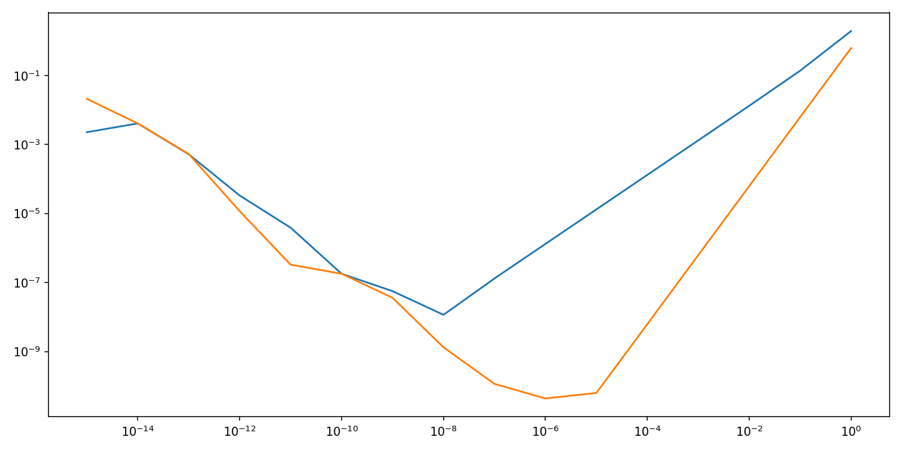
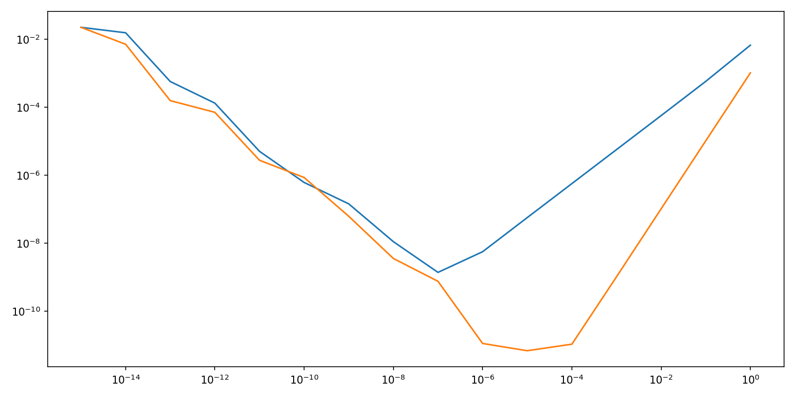

Note
Go to the end to download the full example code.
Validation of tangent integration algorithms using Finite Differences#
Evaluation of relative quadrature error with the following parameters:
ndim = 2
A = np.random.random((ndim,ndim))
def fun(t,x):
return np.dot(A,x)
def gun(t,x):
return np.dot(A,x)*np.dot(x,x)
def gradfun(t,x,dx):
return np.dot(A,dx)
def gradgun(t,x,dx):
dxr = np.asarray(dx).reshape(-1)
resr = 2*np.dot(x,dxr)*np.dot(A,x) + np.dot(x,x)*np.dot(A,dxr)
return resr.reshape(-1,1)
plt.show()

plt.close()
nint = 100
t_span = (0.,0.01)
def int_fun(x):
xx = x[:ndim].copy()
vx = x[ndim:].copy()
resx, resv = choreo.scipy_plus.ODE.ImplicitSymplecticIVP(
fun ,
gun ,
t_span ,
xx ,
vx ,
rk ,
rk ,
nint = nint ,
)
return np.ascontiguousarray(np.concatenate((resx,resv)).reshape(-1))
def int_grad_fun_impl(x,dx):
xx = x[:ndim].copy()
vx = x[ndim:].copy()
dxx = dx[:ndim].reshape(ndim,-1).copy()
dxv = dx[ndim:].reshape(ndim,-1).copy()
resx, resv, grad_resx, grad_resv = choreo.scipy_plus.ODE.ImplicitSymplecticIVP(
fun ,
gun ,
t_span ,
xx ,
vx ,
rk ,
rk ,
grad_fun = gradfun ,
grad_gun = gradgun ,
grad_x0 = dxx ,
grad_v0 = dxv ,
nint = nint ,
)
return np.ascontiguousarray(np.concatenate((grad_resx,grad_resv)).reshape(-1))
plt.show()

plt.close()
def int_grad_fun_expl(x,dx):
xx = x[:ndim].copy()
vx = x[ndim:].copy()
dxx = dx[:ndim].reshape(ndim,-1).copy()
dxv = dx[ndim:].reshape(ndim,-1).copy()
resx, resv, grad_resx, grad_resv = choreo.scipy_plus.ODE.ExplicitSymplecticIVP(
fun ,
gun ,
t_span ,
xx ,
vx ,
rk_expl ,
grad_fun = gradfun ,
grad_gun = gradgun ,
grad_x0 = dxx ,
grad_v0 = dxv ,
nint = nint ,
)
return np.ascontiguousarray(np.concatenate((grad_resx,grad_resv)).reshape(-1))
fig, ax = plt.subplots(
figsize = figsize,
dpi = dpi ,
)
for i, order in enumerate(orderlist):
err = choreo.scipy_plus.test.compare_FD_and_exact_grad(int_fun,int_grad_fun_expl,xo,dx=dxo,epslist=epslist,order=order)
plt.plot(epslist,err)
ax.set_xscale('log')
ax.set_yscale('log')
plt.tight_layout()
plt.show()
